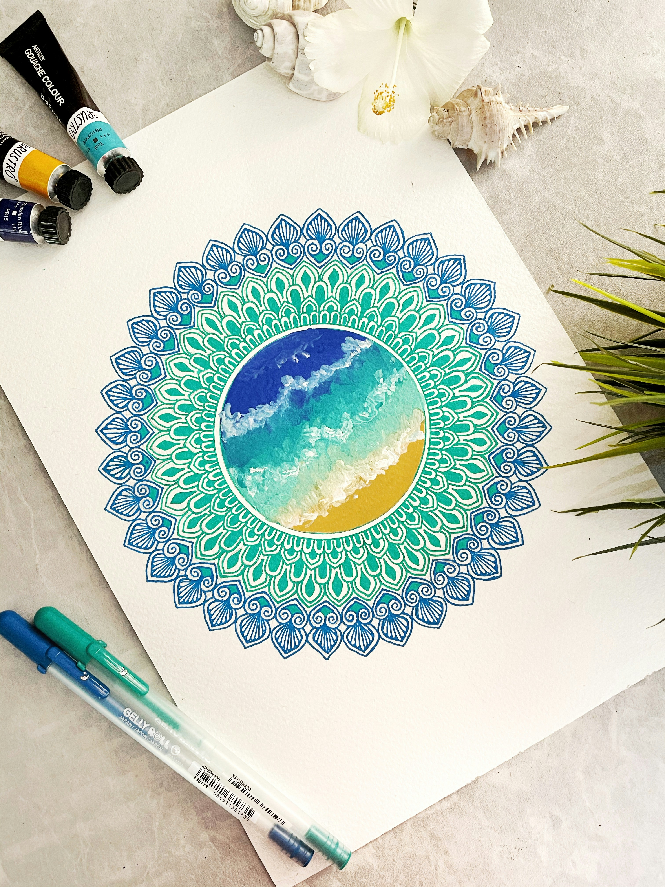

Therapeutic Session Structure
Mindful Check-in
Begin with a short guided meditation (2–5 minutes) to ground attention and body awareness.
Guided Art Activity
Provide prompts such as "Draw Your Emotion", "Safe Space", or a Mandala exercise. Encourage spontaneous expression.
Mindful Reflection & Integration
After creating art, guide participants to observe their work without judgment and describe feelings that came up.
Mandala Technique (Step-by-step)
- Start with a brief centering meditation.
- Draw or trace a circle.
- Fill the circle with spontaneous patterns, shapes, and colors.
- Reflect on the process and any emotions that arose.

Example: Mandala as a move from disorder → order.